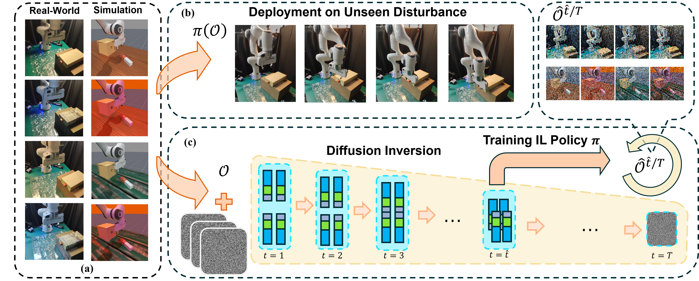

Abstract
Visual imitation learning methods demonstrate strong performance, yet they lack generalization when faced with visual input perturbations, including variations in lighting and textures, impeding their real-world application. We propose Stem-OB that utilizes pretrained image diffusion models to suppress low-level visual differences while maintaining high-level scene structures. This image inversion process is akin to transforming the observation into a shared representation, from which other observations stem, with extraneous details removed. Stem-OB contrasts with data-augmentation approaches as it is robust to various unspecified appearance changes without the need for additional training. Our method is a simple yet highly effective plug-and-play solution. Empirical results confirm the effectiveness of our approach in simulated tasks and show an exceptionally significant improvement in real-world applications, with an average increase of 22.2% in success rates compared to the best baseline.
Overview of Stem-OB

(a) Our method has been evaluated in both real-world and simulated environments. (b) The trained visual IL policies are directly applied to the original observation space \( \mathcal{O} \), demonstrating robustness to unseen environmental disturbances. (c) We train the visual IL policy \( \boldsymbol{\pi} \) on the diffusion-inversed latent space \( \hat{\mathcal{O}}^{\hat{t}/T} \), where \( \hat{t} \) denotes a specific inversion step out of a total of \( T \). Each composite rectangle in the diffusion inversion process, made up of three smaller sections, represents the latent vector of an image, with finer attributes (gray) depicted as the smaller section. During the inversion process, finer attributes converge earlier than coarser ones.
Real-World Experiments
Experiment Setup

(a) Overview of the whole setup. (b)(c) These tasks are performed by the robot in a real-world environment, from left to right: Cup2Plate, Turn on Faucet, Open Drawer, and Duck2Bowl. The figure showcases the initial and final states of the tasks.
Experiment Results
Evaluation of real-world experiments. Train.: evaluations in the same settings as the training dataset. Gen.: evaluations under different visual perturbations for generalizability analysis. All: evaluations including both Train. and Gen. The tasks are C2P (Cup to Plate), D2B (Duck to Bowl), OD (Open Drawer), and ToF (Turn on Faucet). We report the mean and standard deviation of the success rate (%) over 6 settings for each task, and the best results are highlighted in bold.